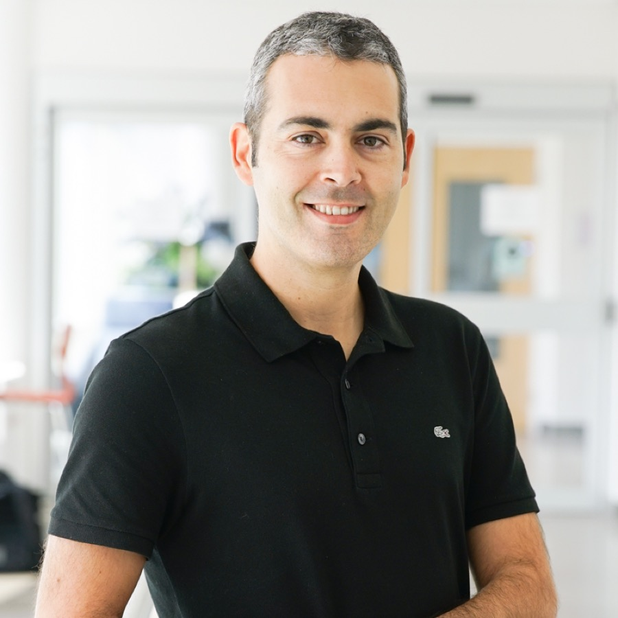
Leadership
Steering Committee
The SEAMS community is guided by a Steering Committee, whose members are listed below.
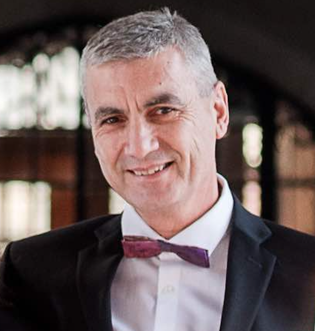
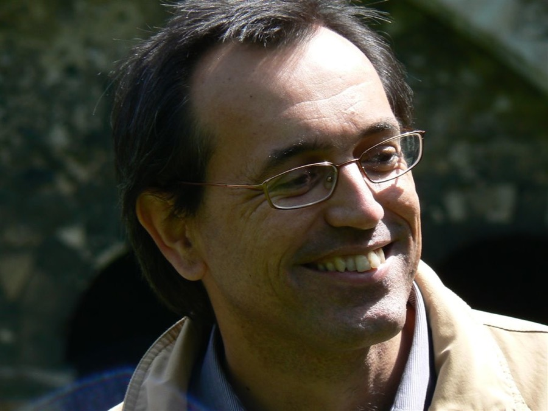
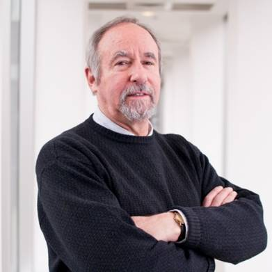
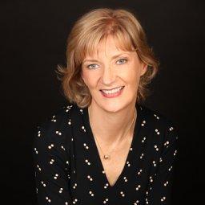
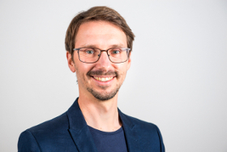
Thomas Vogel
Humboldt-Universität zu Berlin, Germany
Publicity Strategy Liaison 2023, Program Committee Chair 2025
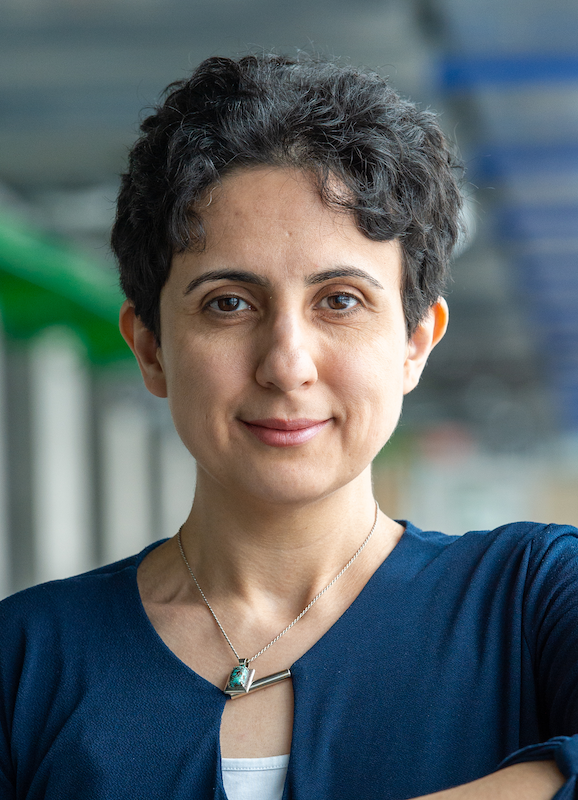
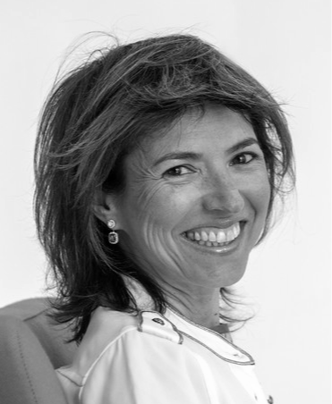
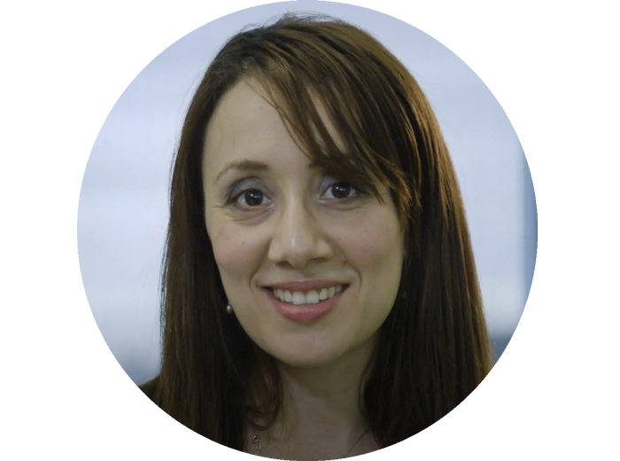
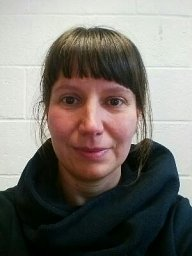
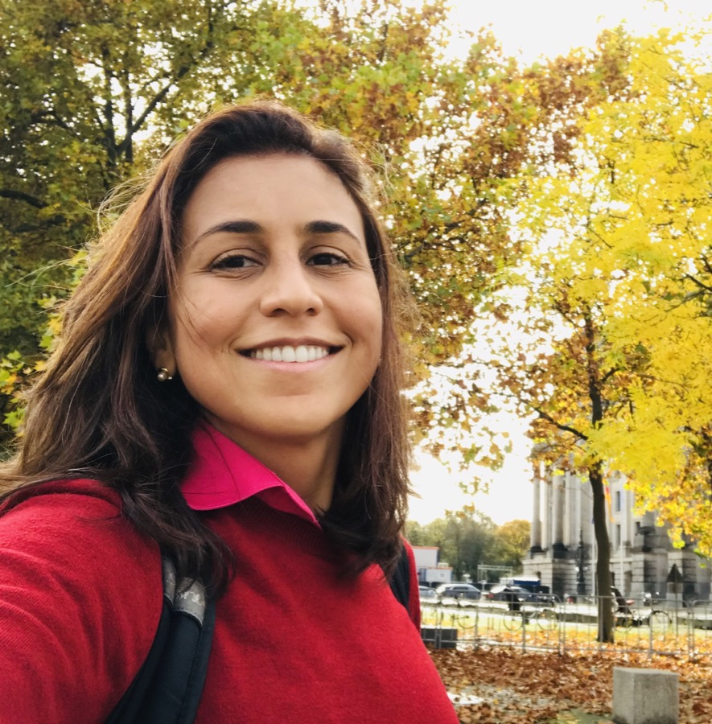
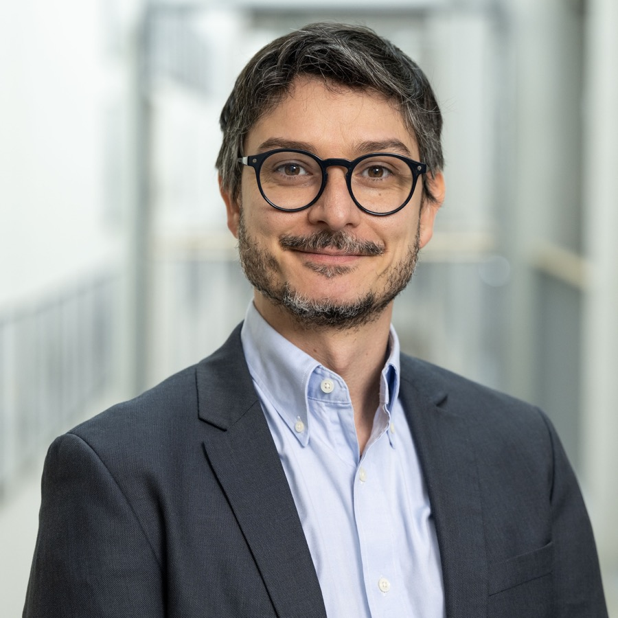
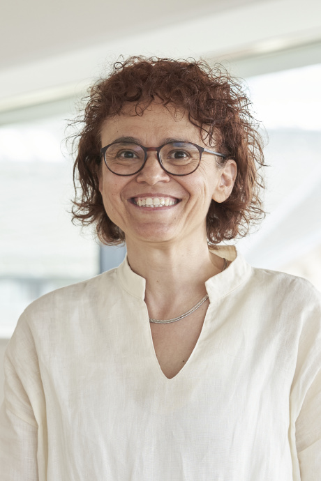
Raffaela Mirandola
Karlsruhe Institute of Technology, Germany
Service Member, Program Committee Chair 2021, General Chair 2023